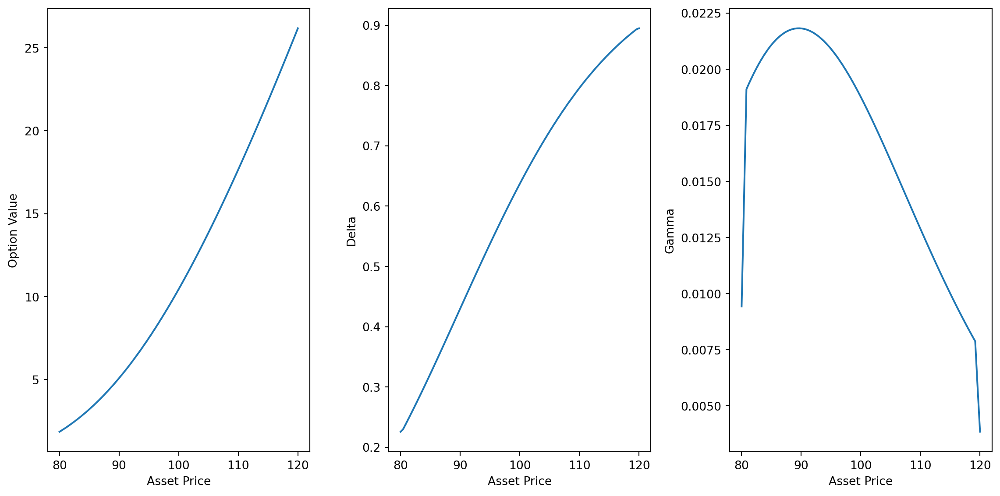

import numpy as np
# function to define the payoff
def payoff(x):
return 2*x+3
# let's define the outcome of our discrete random variable.
outcomes = [1, 2, 3, 4, 5, 6]
# let's calculate the payoff for each outcome
payoffs = [payoff(outcome) for outcome in outcomes]Jensen’s inequality from Johan Jensen, Danish Mathematician, has popped up several times through my quantitative finance journey. As I never explicitly dealt with it, I thought I’ll make a post about it.
The question Jensen’s inequality address is how does the mean of a function relate the function of the mean. First, we’ll check how in the case of linear functions, there are no difference there. Then we’ll go on more complex functions where their concavity (aka second derivative) matters.
Linear transformations of Random Variables
What happen when we transform in a linear way a random variable?
We claim that as long as f is linear: mean(f(x)) == f(mean(x))
Let’s use an easy & simple example. A fair dice is thrown. Let’s imagine a payoff which is a linear function: say, the payoff is \(2 * \text{(face of the die)} + 3\).
In this case \(X\) is a discrete random variable that can take the values \({1, 2, 3, 4, 5, 6}\).
With linear transformations and in this example, we have the mean of the payoff that is equal to the payoff of the mean.
print(f"The mean of the outcomes [1, 2, 3, 4, 5, 6] is {np.mean(outcomes)}")
print(f"The payoff of the mean is {payoff(np.mean(outcomes))}")
print(f"The payoffs are {payoffs} and the mean of the payoffs is {np.mean(payoffs)}")The mean of the outcomes [1, 2, 3, 4, 5, 6] is 3.5
The payoff of the mean is 10.0
The payoffs are [5, 7, 9, 11, 13, 15] and the mean of the payoffs is 10.0Now this equality doesn’t hold anymore when it comes to non-linear function.
Convex transformations of Random Variables
The Jensen’s inequality is in regards to convex functions (aka its second derivative is positive on an interval) and states that the mean of the transformation is always greater or equal to the transformation of the mean.
Using the language of probability, we can write that for any convex functions \[\mathbb{E}[f(X)] \geq f(\mathbb{E}[X]) \tag{1}\]
Again let’s take an easy example with the convex function \(f(x) = X^2\). We will use the same inputs (the roll of a die) as the above example.
The intuition is that the mean of squared numbers is greater than the square of the mean numbers. This is because bigger number squared will add extreme value (on the high side) to the mean.
Using a small Python script.
outcomes = [1, 2, 3, 4, 5, 6]
# defining our transform functions.
def payoff(x):
return x**2
payoffs = [payoff(outcome) for outcome in outcomes]
payoffs[1, 4, 9, 16, 25, 36]Let’s now calculate both \(\mathbb{E}[f(X)]\) and \(f(\mathbb{E}[X])\)
print(f"The mean of the transformed outcomes is {round(np.mean(payoffs), 3)}")
print(f"The transformed of the mean is {payoff(np.mean(outcomes))}")The mean of the transformed outcomes is 15.167
The transformed of the mean is 12.25When is it an equality then? When all the observations in the sets have the exact same values, then \(\mathbb{E}[f(X)] = f(\mathbb{E}[X])\).
Visually, we could see this on the parabola.
Simulation
To make our experiment a bit more realistic, we could simulate 50 roll of dice and check that the Jensen’s inequality still hold. Our convex function is stil \(f(x)=X^2\).
outcomes = np.random.randint(1, 7, 50)
def payoff(x):
return x**2
payoffs = [payoff(outcome) for outcome in outcomes]And let’s again compare the mean of the transformed vs the transformed of the mean.
print(f"The mean of the transformed outcomes is {np.mean(payoffs)}")
print(f"The transformed of the mean is {payoff(np.mean(outcomes))}")The mean of the transformed outcomes is 18.44
The transformed of the mean is 15.6816Jensen’s inequality in finance
Arithmetic mean vs Geometric mean
One way, the Jensen’s inequality is used in finance is when it comes to returns. We can indeed compute the average returns as a arithmetic average or as a geometric average.
Let’s say, we have a data set with n observations. Then we define, the arithmetic mean as \[AM = \frac{1}{n} \sum_{i=1}^n i\] and the geometric mean as \[GM = \left( \prod_{i=1}^n i \right)^{\frac{1}{n}}\]
Using logarithms, and starting with the arithmetic mean, we have: \[log(AM) = log \left( \frac{1}{n} \sum_{i=1}^n i \right) \tag{2}\]
Continuing with the geometric mean, we have: \[log (GM) = log \left( \prod_{i=1}^n i \right)^{\frac{1}{n}} = \frac{1}{n} log \left( \prod_{i=1}^n i \right) = \frac{1}{n} \sum_{i=1}^n log(i) \tag{3}\]
We could transform Equation 3 saying that the geometric mean is the exponential of the arithmetic mean. \[GM = exp \left( \frac{1}{n} \sum_{i=1}^n i \right) \tag{4}\]
Back to Jensens’s inequality.
The log function is a concave function. We just re-write Equation 1 changing the inequality sign: the mean of the transformation is less or equal to the transformation of the mean. On probabilistic terms, \[\mathbb{E}[f(X)] \leq f(\mathbb{E}[X])\]
\[log(GM) = \text{mean of the transformation (log)}\] \[log(AM) = \text{transformation (log) of the mean}\]
If we go back to our dice throwing example, we should see that the \(log(GM) <= log(AM)\). Let’s model that
outcomes = [1, 2, 3, 4, 5, 6]
mean_outcomes = np.mean(outcomes)
def payoff(x):
return np.log(x)
payoffs = [payoff(outcome) for outcome in outcomes]print(f"Log(GM) - The mean of the transformed (log) is {np.mean(payoffs)}")
print(f"Log(AM) - The transformed (log) of the mean is {np.log(np.mean(outcomes))}")Log(GM) - The mean of the transformed (log) is 1.0965418686683501
Log(AM) - The transformed (log) of the mean is 1.252762968495368This match our initial statement. mean of the transformed being smaller than the transformed of the mean as the transformation is concave!
And we can undo that log using an exponent (which will preserve the inequality sign). Hence GM < AM. In finance, especially portfolio management, GM means are preferred as it is taking into account the compounding effect of the returns.
Options convexity
We are talking about the convexity of options to draw the attention on the non-linear relationship (in this case convex relationship … duh!) between the option’s price and the price of its underlying asset.
This comes from the second order derivative of the option’s price in regards to the price of the underlying. In the Black-Schole Merton equation, this can be seen as: \[\frac{\partial{V}}{\partial{t}} + \color{blue}{\frac{1}{2} \sigma^2 S^2 \frac{\partial^2{V}}{\partial{S}^2}} + r S \frac{\partial{V}}{\partial{S}} - rV = 0\]
Recall the value of a vanilla European call option at expiration is \(C(S) = max(S-K, 0)\) where:
- \(K\) is the strike price
- \(S\) is the price of the underlying
- \(C(S)\) is the value of the option price at expiry
- \(S-K\) is a linear relationship
But the rate of change of the option price in regards to its underlying is not linear.
import matplotlib.pyplot as plt
K = 100
S = np.linspace(80, 120, 100)
C = np.maximum(S-K, 0)
delta = np.gradient(S, C)
gamma = np.gradient(delta, S)
plt.figure(figsize = (12, 6))
plt.subplot(131)
plt.plot(S, C, label = 'Option Price')
plt.xlabel('Asset Price')
plt.ylabel('Option Value')
plt.subplot(132)
plt.plot(S, delta, label = 'Delta')
plt.xlabel('Asset Price')
plt.ylabel('Delta')
plt.subplot(133)
plt.plot(S, gamma, label = 'Gamma')
plt.xlabel('Asset Price')
plt.ylabel('Gamma')
plt.tight_layout()
plt.show()